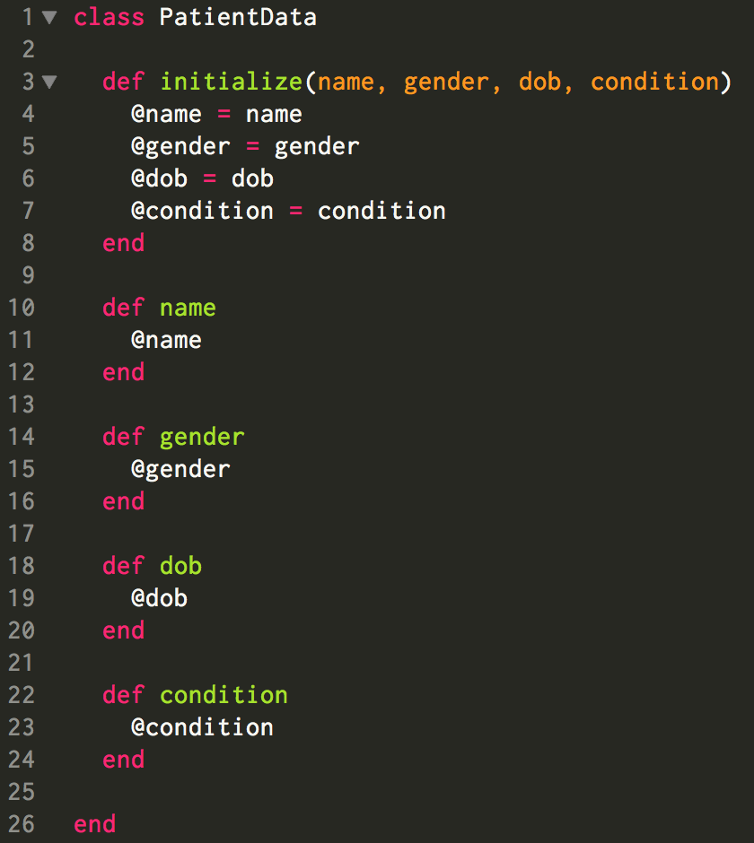
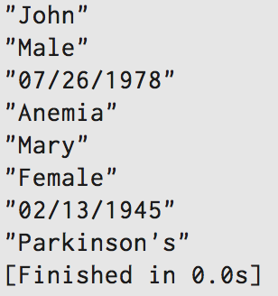

Programming is a beautiful way of constructing a funtional and convenient system for its users. A good program is easily readable, shows a well-organized work flow, and therefore is easily modified without affecting the overall function. Classes and objects play a crucial role in the organization of a program. It is like the section dividers in a binder we used in high school. We would have a divider with a label 'Biology', in which we stored all our biology-related notes. Another divider 'Social Studies' would store all our history-related notes, and so on. Let us talk more about how and when we would use Classes in real life.
To create a class, you simply call a ruby method 'class', give it a ClassName, and close it by using the 'end' command. A picture is worth a thousand words. Here is how we first create a class:
Simple, right? Now let's make some methods that are instances of our class PatientData.
In cases where we want a newly-made Class object to have some initial attributes, we start by defining initialize method. In this case, we wanted our class object to take in four arguments -- name, gender, date of birth, and condition. Within the method, we then created 4 instance variables for each of arguments to be assigned (we simply put a @ sign in front of their names).
Now that we have instance variables with specific information stored in them, we must define some methods to bring up those pieces of information when we need them. The ruby convention for creating a method stays the same for class methods.
With these methods created, you can now call these methods on our class object which we will demonstrate shortly.
But first, this is the overview of our class structure so far.

In order to create an object that belongs to a class, you must write: object = ClassName.new(argument)
Here is our example.
You're starting to see how creating a class and its objects can be a great way in real life. Now, to retrieve certain attributes of the objects, we simply call our methods on them. Here is how:

If I were to give examples of how classes and objects can be utilized in real life, the list would be endless. I hope you have a better understanding of why classes are important, and how to put them into use.